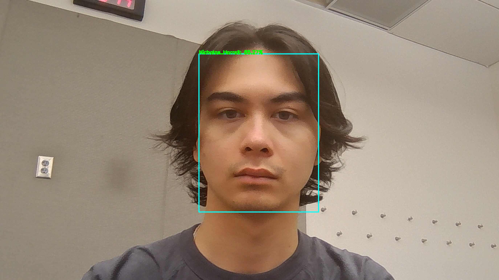

Computer Vision
Facial Recognition Check-in System
Applying facial recognition to an automatic check-in workflow.

Project overview
This project explores how computer vision can support check-in by recognizing a person from camera imagery. It connects a visual recognition task with an everyday workflow, moving from image analysis toward a practical application.
Approach
The key visual tasks are finding a face in an image and associating it with an identity. The featured image shows those ideas through a bounding box and a name label. An automatic check-in workflow uses that recognition information as the basis for identifying who is present.
Why it matters
The work illustrates how image processing and facial recognition fit into a larger user-facing system. It connects the technical challenge of interpreting camera input with the practical goal of making a routine interaction easier to complete.